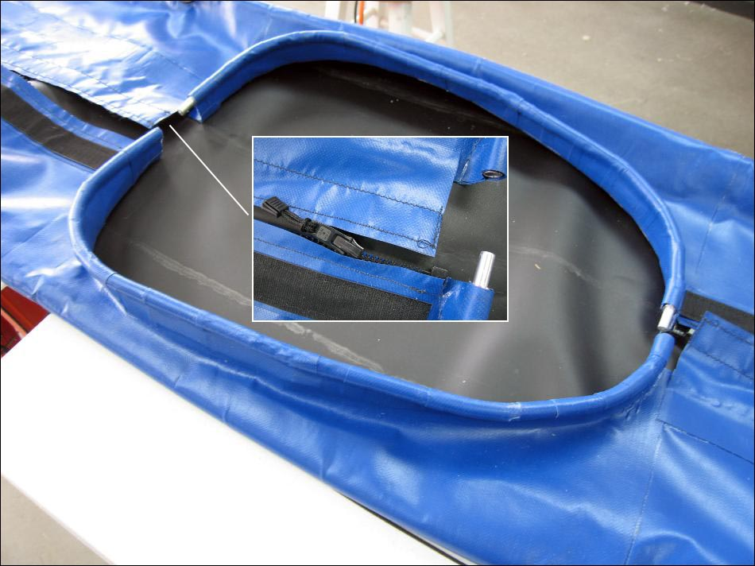

| Sea Glider Coaming | Menu Last Page Next Page |
|
 The Sea Glider has a .5in aluminum tube coaming ( 24 X 16in). The .25in aluminum inserts connect the coaming tubes. YKK #10 plastic marine zippers are installed on the forward and aft decks and are covered by 5in wide Velcro / PVC flaps. Zipper pulls ease opening and closing. |
|